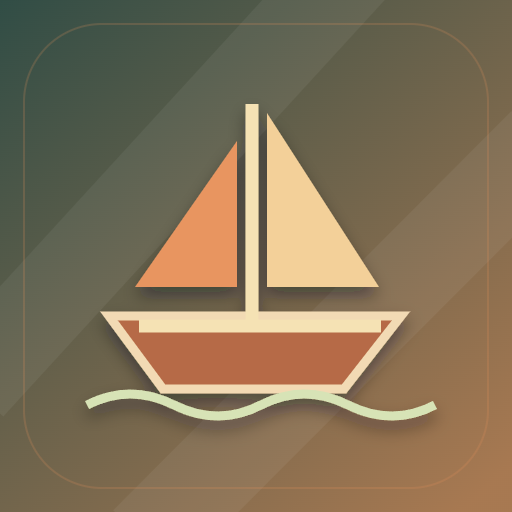

<- all projects

Feira dos Ventos
PC
Volume
Live
Every deal changes the next one.
Iara runs a travelling market boat on the river. Start with 220 coins and set out on a seven-day trading voyage where every purchase moves the price. Compare buying and selling prices across ports, accept up to two contracts with fixed pay and deadlines, and pack the hold, where fruit and fish spoil after two nights. Rival merchants Dora, Luan and Nina buy up stock and change tomorrow's market. There are six ports, 18 goods, three hulls to unlock, six story chapters with the river cooperative, voyage charters and a daily challenge with seeded run codes.